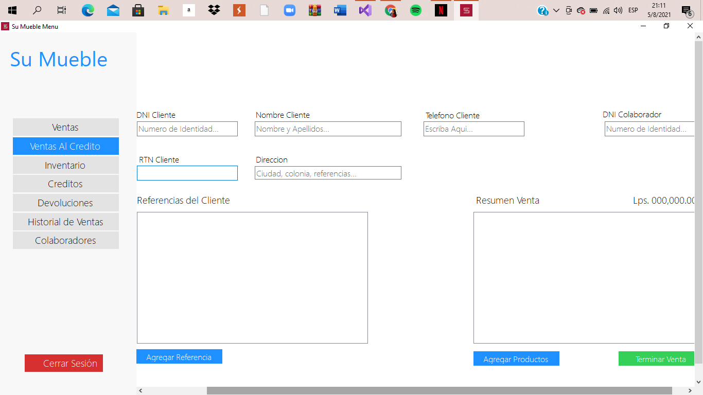

ventas credito
Procederemos a llenar todos los campos correspondientes con los datos requeridos en las especificaciones propuestas en dicha pantalla, tomando en cuenta todos los aspectos y limitaciones para llenar todos los campos de la manera correcta. Al momento de hacer la venta al crédito el sistema requiere mínimo 2 referencias que son las que respaldan al cliente ante cualquier circunstancia y deberá llenar los siguientes datos siempre cumpliendo con los estándares requeridos por los desarrolladores.

También se solicita información del producto a vender y para seleccionaremos la opción “ agregar productos” y nos mostrará la siguiente ventana para elegir el producto a vender. Una vez hecho todo esto simplemente seleccionamos “Agregar a la venta” y nuestra venta al crédito estará efectuada.

Una vez agregado el producto el sistema automáticamente para terminar la venta al crédito nos mostrará la siguiente ventana para finalizar con nuestra venta.